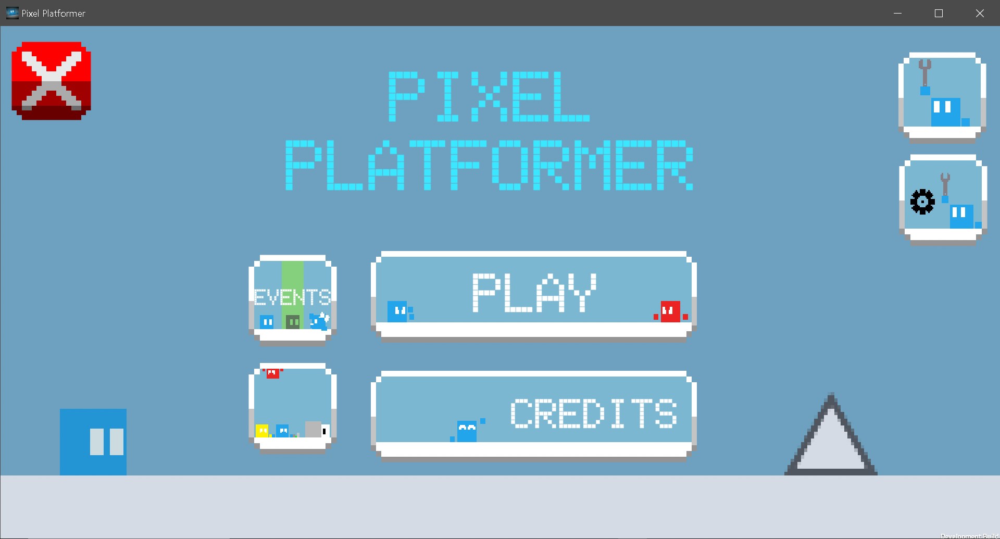
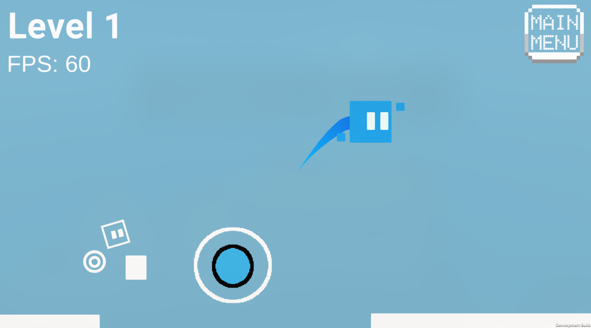
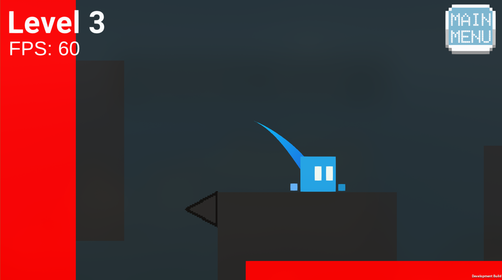
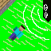
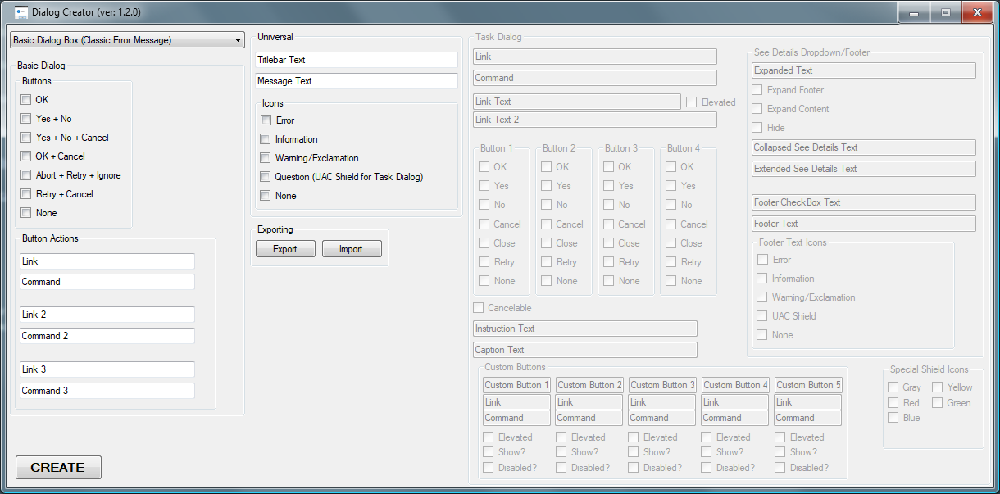
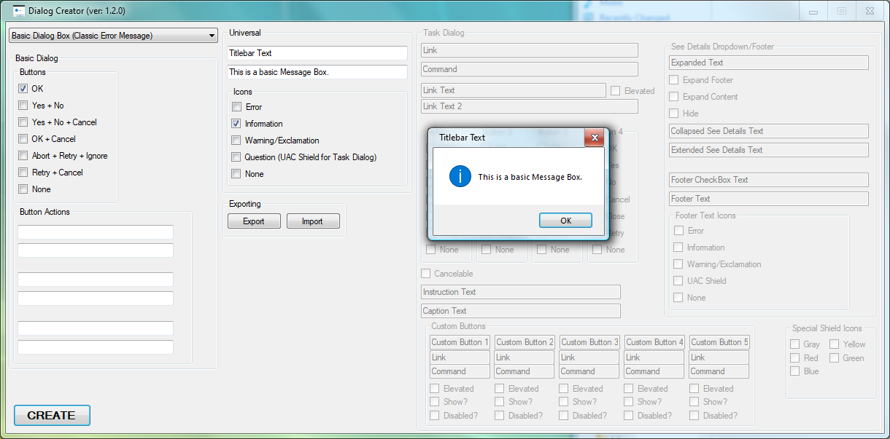
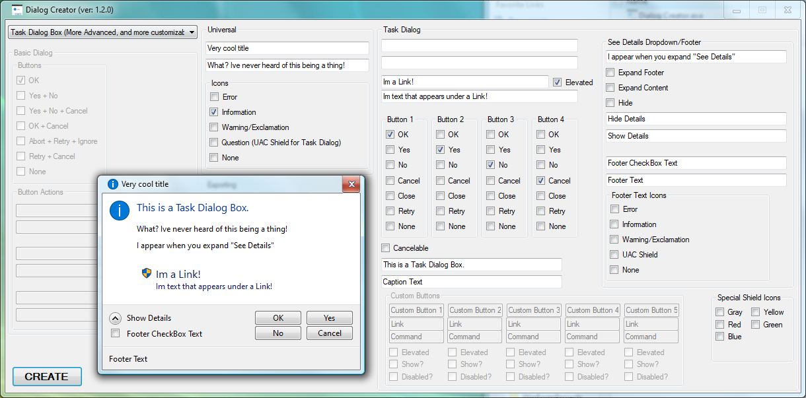
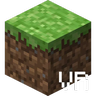
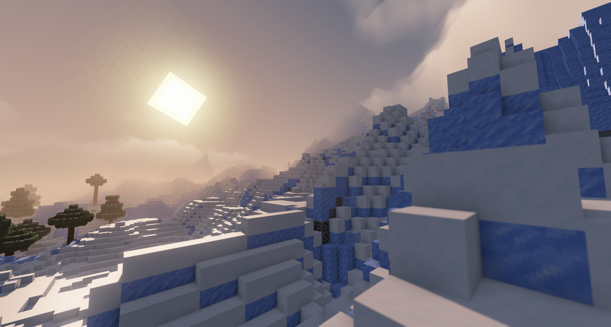
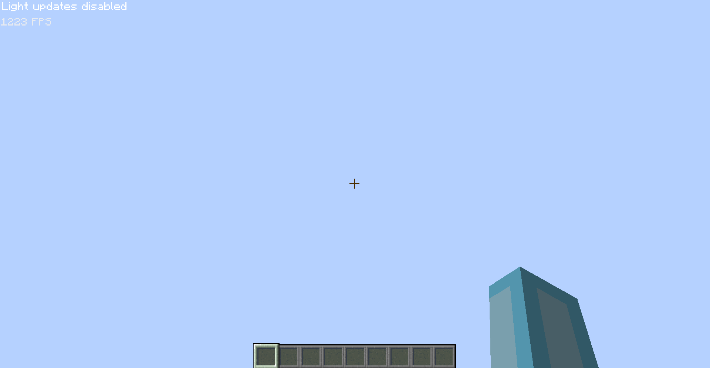

Hello! I am Korbyn. An Autistic 15 year old who likes Gaming, Computers, Programming, collecting, among other things. One of my primary goals in life is releasing projects I made completely myself that helps someone, or makes someone's day.
I play games like Minecraft, Geometry Dash, and Terraria primarily. I also play more niche games like OpenFront, The Henry Stickmin Collection, BeamNG.drive, and Rivals of Aether. Games I don't play as often are Cookie Clicker, Garry's Mod, Progressbar95, and Stardew Valley on occasion. ...and Among Us has seen more active days from me XD.
I am primarily learning a Programming Language called Java, with GDScript on my radar to be my secondary language, I know a little C# and it used to be my primary, but I left that ship ever since I left Windows for Linux. Speaking of which, I use CachyOS (btw) running on a system with an Intel Core i7-3770, 16GB DDR3 RAM, 1TB Hard Drive, and an AMD Radeon RX 560. It's an old Computer (even though it was initially built in 2020) but for right now it does my needs good enough, that will probably change in the coming years though.
For Consoles, I own a PS5 30th anniversary edition, PS4, first model Nintendo Switch 1, Wii U, DSi, Wii, DS lite, and Nintendo 64 with no plans on stopping. I used to own an Xbox One, and PS3, but they were broken shortly after getting them through various circumstances. (if you would like to know, the Xbox One was pissed on by one of the dogs in the house, and the PS3 broke on its own by I am assuming is Hard Drive failure, don't know for certain as I was around 3 when it happened, I know that I was trying to play Minecraft Story Mode with 2 controllers (don't ask) when it happened.)
Now for more personal stuff, my first several years on this planet were very chaotic, these stories I mention just scratch the surface.
When I was several months old, a tornado came by my families' apartment, and left me behind (on accident, they didn't forget about me.). Before the apartment got destroyed, by some miracle, I decided to go into the bathroom and into the bathtub and saved my life. According to my parents, they were shocked and relieved (and crying) when they found me in the tub alongside the rubble that was behind.
When I was first diagnosed with Autism, the doctors that came to the conclusion said that it was severe enough that I would most likely never talk once in my life, only being able to communicate with paper or sign language. For a while, it did seem the case, I was purely relying on sign language to communicate, however on a completely random evening I spoke my first words and made my Mom rush into my room. The first word was "train", my Mom immediately got one and gave it to me XD.
I honestly cannot believe I did these seemingly impossible things for me at a young age, but I prevailed, and it inspires me to keep going. I purely rely on my parents for the majority of this information, which are very truthful and good people, so I don't think any of it is made up.
This page contains all of my Projects I am currently working on. All Projects of mine that are no longer being worked on will not be here, to see those, go to the Gallery.
Games
Project RevitalizedCurrently in the planning stages, this will be a Platformer game.
Project HovercraftCurrently in the planning stages, this will be an Arcade Game inspired by Hovercraft: Takedown by High Score Hero.
Web pages
Fake Error Generator Lista List of error generators I have found.
Minecraft Mods
Skulka Minecraft Mod for Indev version 20100223. It aims to fix issues with the version, primarily the awkward Mouse behavior.
Minecraft Resource Packs
Black Hole Moona Minecraft Resource/Texture Pack for every version of Minecraft that supports texture loading. It says it in the name, it replaces the moon with a self-made Black Hole aiming to fit within the Minecraft art style.
Cyan Rosea Minecraft Resource Pack that replaces the Blue Orchid's Texture with the Cyan Rose from early Pocket Edition. There are 2 versions, one with a custom-made modern look and one that takes the Texture straight from Pocket Edition.
Minecraft Modpacks
OptiFiniumThe one of many performance boosting packs out there, however it aims to be a base for a grander Modpack than just "An OptiFine Alternative". It is made to be as lightweight as possible, the mrpack file for 2.0.7-26.3-b5 only takes 16.2KB!
Silver AgeAims to turn Minecraft 1.21.1 into a very accurate recreation of 1.12.2. It's to primarily play The Broken Script in the version its suppost to take place, however you can use it however you want.
"Honouring the past, whilst looking towards the future."
Welcome to the Gallery, where my past Projects reside to enjoy their retirement.
Pixel Platformer
The biggest project I have ever scrapped. It was in development for a little over 2 years whilst learning Unity before deciding it wasn't worth working on anymore. It was a Platformer aiming to finally achieve my dream of releasing a game. However, feature creep and its horrible codebase killed it.



Pixel Platformer was created in Unity and began development in 2023 and ended in 2025. It was playtested by my online friends on a Discord Server, and surprisingly got praised for the player's movement. I also released the Source of the game on the server, which a friend of mine modded to add a theoretical character that was yellow instead of light blue, it was added in a build that added character customizability. Its spirit will show in Project Revitalized, however the gameplay will be very different.
Trivia
1. All music in the game are copyright-free songs I found on various sites. If I kept going I would have either made unique music or remixes of the music I put in, in other words they were placeholders.
2. 16 people playtested the game.
3. In the very beginning I struggled getting the Player Movement code working and considered giving up over it. However, with some help with one of my online friends I managed to get it working. The code was completely copied from Bendux Studio's Movement Script from his tutorial.
4. The codebase was VERY messy. It contained a lot of copied code and some of my own, which caused it to be an absolute mess. It didn't help that I was learning C# and Unity along the way.
Everlasting Music
a Minecraft Mod that aims to fix a bug in Indev 20100223 that made Music fade out after traveling a bit.

Everlasting Music was replaced by Skulk after its rewrite from being a Jarmod to an Ornithe Mod.
Trivia
1. Everlasting Music is a Jarmod, it means it directly modifies Minecraft classes inside the Minecraft jar. It is very impractical, however it used to be the main way of modding the game in its early days.
Betafied
a Minecraft Modpack that accurately recreates Beta 1.7.3 on 1.21.1.


Betafied aimed to replace Beta in VR with more accuracy. I stopped working on it because I was putting too much weight on my shoulders with other projects.
Dialog Creator
a Windows Application made with WinForms and C# that allows you to make custom error messages with a UI.



Dialog Creator is the first Application that I released. I stopped working on it because Visual Studio doesn't support Linux, I was working on it when I was on Windows.
Beta in VR
a Minecraft Modpack that puts you inside a recreation of Beta 1.7.3 through Virtual Reality.

Beta in VR is my first attempt at recreating an older version of Minecraft on a newer one. It was replaced by Betafied.
Trivia
1. On the Project page, there is a note for QuestCraft users that want to play the mod on their headset. There are instructions on how to get it working, I still have the txt file on here.
RealCraft
a Minecraft Modpack that aims to make the game as realistic as possible.

RealCraft was a very poorly made Modpack, which made me quit working on it.
Trivia
1. The Modpack uses a quote on its Project page taken from Microsoft Flight Simulator. "As Real As It Gets."
2. The Modpack was made by just throwing Mods into it and hoping it would work. There are duplicate mods that achieve the same thing as well.
SmoothMC
a Minecraft Modpack aiming to improve the games performance to monumental levels.

SmoothMC was the very first Modpack I ever created, it was released in 2023.
Painting with Chiseled Bookshelves
a Minecraft Resource Pack aiming to utilize Chiseled Bookshelves as a way to paint custom images in black and white.


Painting with Chiseled Bookshelves was intended to be played on the snapshot that released Chiseled Bookshelves.
Trivia
1. Bookshelves was spelled improperly, instead it says "Bookshelf's".
Block Tweaks
a Minecraft Resource Pack aiming to make 2D blocks in the game 3D with custom models.


Block Tweaks was intended to be played on 1.18.
Trivia
1. I got onto someone who appeared to me that they were stealing my models (which they weren't, they just looked similar). I made them remove the "similar" models from their project which I feel guilty about, but I was 11, I wasn't intelligent at all. I am sorry Plantasia124.
2. Tweaks is misspelled on the Project page, instead it says "tweeks".
3. There was an update I was going to release that added 3D bookshelves and a 3D enchantment table. However, I didn't get around to releasing it out of laziness.